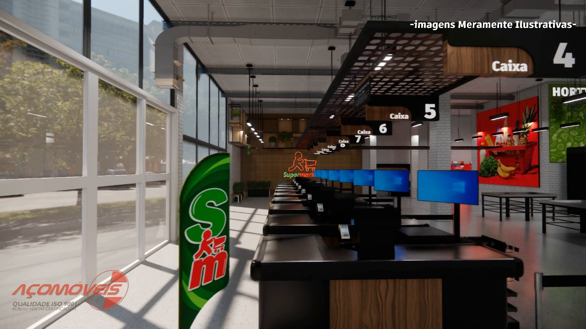
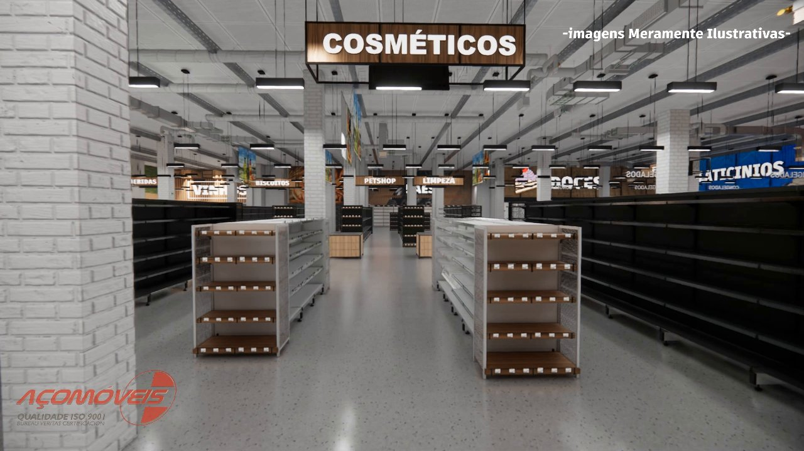
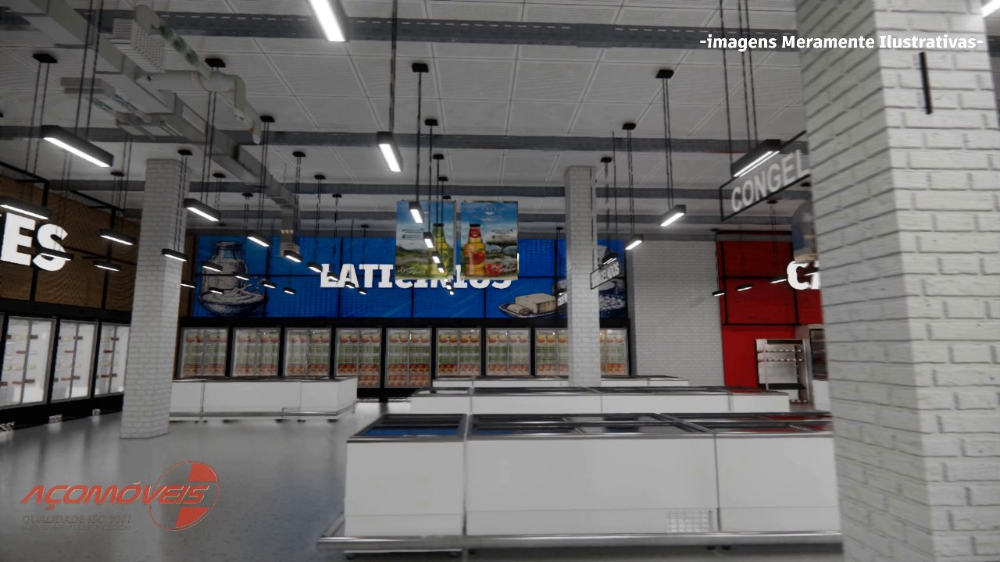
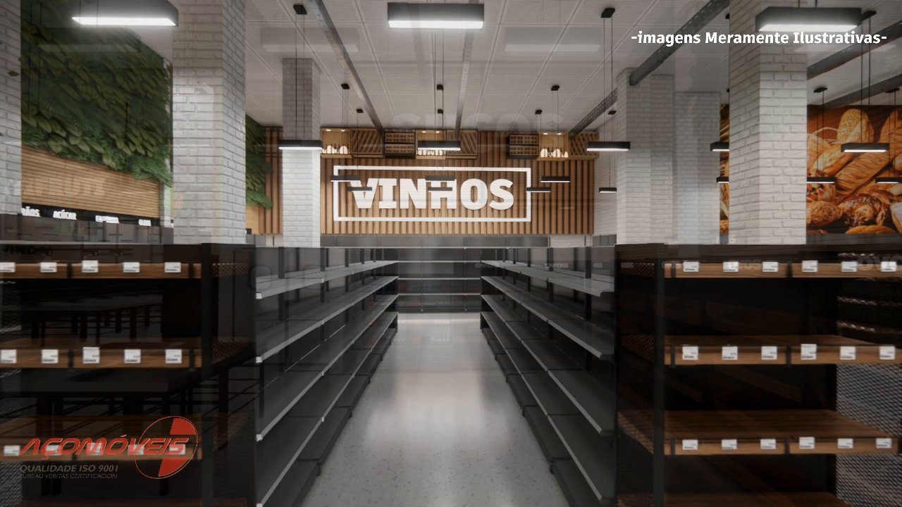
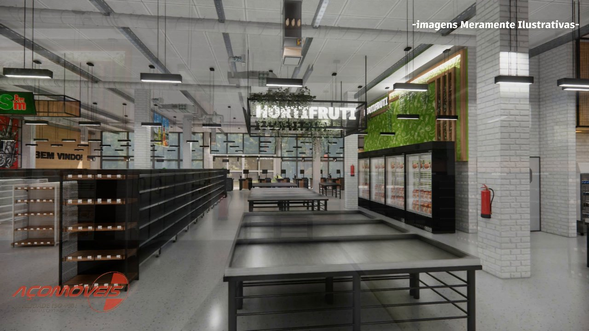
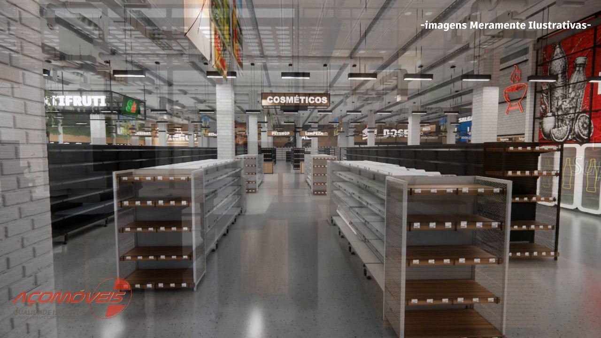

Adequar o vídeo 3D ao planograma proposto
O overlay “imagens meramente ilustrativas” permanece, mas não cobre os itens abaixo. Depois da correção, o 3D deve representar o LJ01 09-09-26 (capa com 57 equipamentos e 16 check-outs). Vídeo analisado: SPK_28_VIDEO_01_LR.mp4 (~1 min 59 s).
Punch list obrigatória
1. Cestos de vinho — não modelar
No 09-09 a coluna Cesto vinhos está zerada. Bebidas: BR-01 e BR-02 (8+8 módulos), BR-05 (4+4, UHT). Alcoólicos na parede BA-03, sem cesto. Não desenhar BR-03 nem BR-04.
2. PDVs — 16 check-outs
O vídeo mostra cerca de 8–11 caixas. A capa tem 16 em coluna à direita. Os 7–8 intercalados do comercial não entram.
3. Perfumaria (GB) 1,50 m
GB-01 e GB-02: 4 módulos por face. GB-03 e GB-04: 3+3. Base 1,00 × 0,35, prateleira slim. No vídeo as ilhas de COSMÉTICOS parecem GO de 1,85 m.
4. BR — três corpos a 1,50 × 1,30 × 0,40
BR-01, BR-02 e BR-05. Não parecer GO/BA de 1,85 m. Não desenhar BR-03, BR-04, BR-06…08 nem BR-09.
5. Ilhas IC — 8 corpos
Esquerda: IC-08 (4), IC-06 (12), IC-05 (12), IC-04 (12). Direita: IC-07 (8), IC-03 (8), IC-02 (8), IC-01 (8). Junto ao açougue.
6. EC-01 carvão
1 módulo parede junto ao açougue, cesto qtd 5, ~1,85 m. O mural de churrasco não substitui o expositor. Não usar GC-01.
7. Hortifruti — 12 mesas
MH-01…12. MH-05 e MH-06 = 3,00 × 1,20 (2 módulos). O vídeo mostra só 2 mesas grandes.
8. Padaria e parede de bebidas
GP-01/02/03 + BP-01…03 + MQ-01 + GS-01. BA-01 (17 mód., 1,85 × 1,30 × 0,60), BA-02 (6), BA-03 alcoólicos (3), BA-04 leite UHT (5, endereço de parede).
Frames do vídeo vs. 09-09






Tabela completa
| Tempo | Vídeo | LJ01 09-09 |
|---|---|---|
| 4,7 s | Fileira de PDVs; placas 4–7 | 16 check-outs |
| 14–25 s | Caixa 1 e 7 | Conferir numeração 01–16 |
| 34–44 s | COSMÉTICOS 4 níveis | GB 1,50 m; GB-01/02 4+4 |
| 34 s | Mural de churrasco | Incluir EC-01 |
| 54 s | 4 cubos de ponto extra | OK (MM-01…04) |
| 64 s | 4–5 baús em linha | 8 corpos IC 4/8/12 |
| 74 s | Padaria | GP-01/02/03 + BP + MQ + GS |
| 84 s | VINHOS ilha alta, prateleira lisa | Sem cesto; alcoólicos em BA-03; BR 1,50 m |
| 94 s | 2 mesas grandes | 12 mesas MH; 05/06 = 3,00×1,20 |
| 104 s | Caixa 9–11 | Ainda não são 16 |
Fora de escopo: Word comercial além do que já entrou no 09-09 (BR-05 de volta, GB-01/02 com +1 módulo, vinho sem cesto).